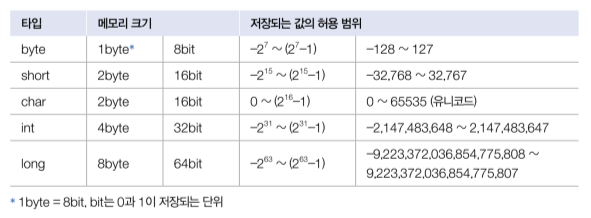
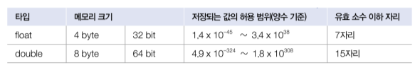
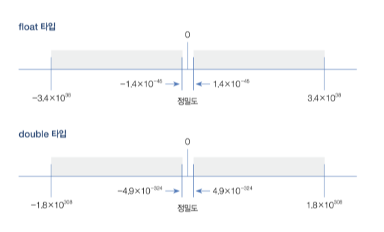
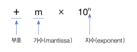
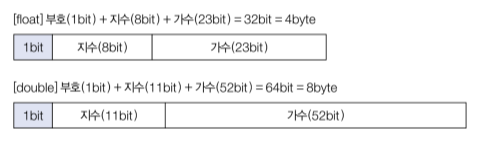

#패스트캠퍼스, #국비지원교육, #메가바이트스쿨, #MegabyteSchool, #개발자취업부트캠프, #내일배움카드
Introduction
이 작업을 왜 하는가?
- Java의 기본적인 문법과 객체지향 개념에 대해 기초적인 내용을 공부하고 정리하기 위한 글입니다.
- '이것이 자바다'라는 책의 내용을 위주로 정리 하였습니다.
- 현재 패스트캠퍼스 백엔드 4기 과정을 진행중에 있으며,
- 이 과정에서 배우는 Java 내용들을 따라가기 위해 개인적으로 학습하는 것이 주된 목표입니다.
방향과 계획
- 이 작업은 'Java'라는 주제의 첫 시작입니다.
- 1: "이것이 자바다"라는 책의 내용을 정리하면서 기본적인 내용을 학습해 보고자 합니다.
- 2: "이펙티브 자바"라는 책의 내용을 정리하면서 좀 더 'Java'에 대해 이해해 보고자 합니다.
- 3: "알고리즘 4판"(Algorithms (4th Edition) by Robert Sedgewick 번역서)를 공부하면서 'Java'와 알고리즘을 같이 공부하려고 합니다.
- 4: "객체지향의 사실과 오해", "오브젝트"를 통해 객체지향의 개념을 학습하고자 합니다.
저장소
- Github Repository에 모든 md파일, 작성해본 예제 파일, 빌드 파일들을 저장해 놓았습니다.
- https://github.com/jerok-kim/this_is_java
자바 시작하기
1-1. 프로그래밍 언어와 자바
- 컴퓨터가 이해할 수 있는 기계어(machine language)는 0과 1로 이루어진 이진 코드를 사용한다.
- 사람과 컴퓨터가 대화하기 위해서는 사람의 언어와 기계어의 다리 역할을 하는 프로그래밍 언어가 필요하다.
- 프로그래밍 언어는 고급 언어와 저급 언어로 구분된다.
- 고급 언어로 작성된 소스 파일은 컴퓨터가 바로 이해할 수 없기 때문에 컴파일(compile)이라는 과정을 통해서 컴퓨터가 이해할 수 있는 0과 1로 이루어진 기계어로 변환한 후 컴퓨터가 사용하게 된다.
- 반대로 저급 언어란 기계어에 가까운 언어를 말하는데, 대표적으로 어셈블리어가 저급 언어에 속한다.
- 자바는 1995년도에 처음 썬 마이크로시스템즈(Sun Microsystems)에서 발표한 후, 가장 성공한 프로그래밍 언어로서 전세계적으로 다양한 분야에서 사용되고 있다.
- 안드로이드 폰에서 실행하는 애플리케이션 뿐만 아니라, 웹 사이트를 개발하는 핵심 언어로 사용되고 있다.
- 모든 운영체제에서 실행 가능한 데스크톱 애플리케이션도 개발할 수 있다.
- 자바는 다른 프로그래밍 언어에 비해 다음과 같은 특징이 있다.
- 모든 운영체제에서 실행 가능
- 자바로 작성된 프로그램은 운영체제와 상관없이 모두 실행되기 때문에 윈도우에서 개발된 프로그램을 수정 없이 바로 맥OS 또는 리눅스에서도 실행할 수 있다는 장점이 있다.
- 객체 지향 프로그래밍
- 먼저 객체(부품)를 만들고, 이 객체들을 서로 연결해서 더 큰 프로그램을 완성시키는 기법을 객체 지향 프로그래밍(Object Oriented Programming, OOP)이라고 한다.
- 자바는 OOP를 위한 최적의 언어이다.
- 메모리 자동 정리
- 자바는 메모리(RAM)를 자동 관리하므로, 개발자는 메모리 관리의 수고스러움을 덜고 핵심 기능 작성에 집중할 수 있다.
- 무료 라이브러리 풍부
- 무료로 다운로드해서 사용할 수 있는 오픈 소스 라이브러리(Open Source Library)가 풍부하기 때문에 프로그램 개발 기간을 단축시켜준다.
- 모든 운영체제에서 실행 가능
1-2. 자바 개발 환경 설정
- 내가 사용할 환경은 다음과 같다.
- 자바는 17버전을 주로 쓰고, 19, 11, 8 버전도 사용해보겠다.
- amazon corretto 에서 jdk를 다운 받았다.
- 통합 IDE는 Jetbrains 의 Intellij IDEA Ultimate 버전을 사용한다.
1-3. 바이트코드 파일과 자바 가상 머신
- JDK를 설치했다면 이제 자바 언어로 작성한 소스 파일을 만들고 컴파일할 수 있다.
- 자바 소스 파일의 확장명은
.java이다.
바이트코드 파일
- 소스 파일(
.java)을 작성한 후에는 컴파일을 해야 한다. - javac(java compiler) 명령어는 소스 파일을 컴파일하는데, 컴파일 결과는 확장명이
.class인 바이트코드(ByteCode) 파일로 생성된다. - 윈도우, 맥OS, 리눅스 등 어떤 운영체제라 하더라도 동일한 소스 파일을 javac로 컴파일하면 모두 동일한 바이트코드 파일이 생성된다.
자바 가상 머신
- 바이트코드 파일(
*.class)을 특정 운영체제가 이해하는 기계어로 번역하고 실행시키는 명령어는java이다. java명령어는 JDK와 함께 설치된 자바 가상 머신(Java Virtual Machine, JVM)을 구동시켜 바이트 코드 파일을 완전한 기계어로 번역하고 실행시킨다.- 바이트코드 파일은 운영체제와 상관없이 모두 동일한 내용으로 생성되지만, 자바 가상 머신은 운영체제에서 이해하는 기계어로 번역해야 하므로 운영체제별로 다르게 설치된다.
- 그래서 운영체제별로 설치하는 JDK가 다른 것이다.

1-4. 소스 작성부터 실행까지
패키지란?
- 자바는 소스 파일 및 컴파일된 바이트코드 파일을 쉽게 관리하기 위해 패키지(package)를 사용한다.
- 패키지는 마치 파일 시스템의 디렉토리와 비슷하다.
package ch01.sec06; // 바이트코드 파일이 위치할 패키지 선언
public class Hello { // Hello 클래스 선언
public static void main(String[] args) { // main() 메소드 선언
System.out.println("Hello, Java"); // 콘솔에 출력하는 코드
}
}
1-5. 코드 용어 이해
package ch01.sec06;
- 다음과 같은 코드를 패키지 선언이라고 부르며, 이는 소스 파일이
src/ch01/sec06패키지에 있다는 뜻이다. public class Hello를 클래스 선언이라 부르며,Hello를 클래스명이라고 한다.- 클래스명은 숫자로 시작할 수 없고, 공백을 포함해서는 안된다.
- 그리고 소스 파일명과 대소문자가 완전히 일치해야 한다.
- 그 다음으로 나오는 중괄호 { ... }를 클래스 블록이라고 하며, 여기에는 클래스의 정의 내용이 작성된다.
public static void main(String[] args) {...}를main()메소드라고 부른다.- 그리고 중괄호
{...}를main()메소드 블록이라고 한다. - 바이트코드 파일을 실행하면 이
main()메소드 블록이 실행된다. - 그래서
main()메소드를 프로그램 실행 진입점(entry point)이라고 부른다. - 마지막줄은 괄호 안에 있는 내용을 Console 뷰에 출력하는 코드이다.
System.out.println("Hello, Java");
1-6. 코드 주석 달기
- 주석은 프로그램 실행과는 상관없이 코드에 설명을 붙인 것이다.
- 복잡한 코드일수록 주석을 달면 전체 코드를 이해하기 쉽다.
- 주석은 컴파일 과정에서 무시되기 때문에 주석을 많이 작성한다고 해서 바이트코드 파일의 크기가 커지는 것은 아니다.
| 구분 | 주석 기호 | 설명 |
|---|---|---|
| 행 주석 | // ⋯ | //부터 행 끝까지 주석으로 처리한다. |
| 범위 주석 | /* ⋯ */ | /*와 */사이에 있는 내용은 모두 주석으로 처리한다. |
| 도큐먼트 주석 | /** ⋯ */ | /**와 */사이에 있는 내용은 모두 주석으로 처리한다. javadoc 명령어로 API 도큐먼트를 생성하는 데 사용한다. |
- 주석 기호는 코드 내 어디서든 작성이 가능하지만, 문자열(" ") 내부에서 작성하면 안 된다.
- 문자열 내부에서 주석 기호는 주석문이 아니라 문자열 데이터로 인식하기 때문이다.
System.out.println("Hello, /*주석이 될 수 없음*/ welcome to the java world!");
- 주석문 작성을 연습해보자.
package ch01.sec11;
/**
* @author jerok-kim
*/
/*
장제목: 1장 자바 시작하기
작성일: 2022.12.19
*/
public class Hello {
// 프로그램 실행 진입점
public static void main(String[] args) {
// 콘솔에 출력하는 실행문
System.out.println("Hello, Java");
}
}
1-7. 실행문과 세미콜론
main()메소드 블록 내부에는 다양한 실행문이 작성된다.System.out.println("Hello, Java");은 괄호() 안의 내용을 출력하는 실행문이다.- 실행문은 변수 선언, 변수값 저장, 메소드 호출에 해당하는 코드를 말한다.
int x; // 변수 x 선언
x = 1; // 변수 x에 1 값을 저장
int y = 2; // 변수 y를 선언하고 2 값을 저장
int result = x + y; // 변수 result를 선언하고 변수 x와 y를 더한 값을 저장
System.out.println(result); // 콘솔에 변수의 값을 출력하는 println() 메소드 호출
- 실행문 끝에는 반드시 세미콜론(;)을 붙여야 한다.
- 실행문을 여러 줄에 걸쳐서 작성하고 맨 마지막에 세미콜론을 붙여도 된다.
- 또한 여러 가지 실행문을 세미콜론으로 구분해서 한 줄로 작성할 수도 있다.
- 실행문에 세미콜론을 붙이는 실습을 해보자.
package ch01.sec12;
public class Calculator {
public static void main(String[] args) {
int x = 1; // 변수 x를 선언하고 1을 저장
int y = 2; // 변수 y를 선언하고 2를 저장
int result = x + y; // 변수 result를 선언하고 x와 y를 더한 값을 저장
System.out.println(result); // 콘솔에 출력하는 메소드 호출
}
}
연습
다음과 같이 출력되도록 Example.java를 패키지 ch01.verify에서 작성해보자
개발자가 되기 위한 필수 개발 언어 Java
package ch01.verify;
public class Example {
public static void main(String[] args) {
System.out.println("개발자가 되기 위한 필수 개발 언어 Java");
}
}
변수와 타입
2-1. 변수 선언
- 컴퓨터 메모리(RAM)는 수많은 번지들로 구성된 데이터 저장 공간이다.
- 프로그램은 데이터를 메모리에 저장하고 읽는 작업을 빈번히 수행한다.
- 데이터를 어디에, 어떤 방식으로 저장할지 정해져 있지 않다면 메모리 관리가 무척 어려워진다.
- 프로그래밍 언어는 이 문제를 해결하기 위해 변수를 사용한다.
- 변수(variable)는 하나의 값을 저장할 수 있는 메모리 번지에 붙여진 이름이다.
- 변수를 통해 프로그램은 메모리 번지에 값을 저장하고 읽을 수 있다.
- 자바의 변수는 다양한 타입의 값을 저장할 수 없다.
- 즉, 정수형 변수에는 정수값만 저장할 수 있고, 실수형 변수에는 실수값만 저장할 수 있다.
- 변수를 사용하려면 변수 선언이 필요한데, 변수 선언은 어떤 타입의 데이터를 저장할 것인지 그리고 변수 이름이 무엇인지를 결정하는 것이다.
int age; // 정수(int)값을 저장할 수 있는 age 변수 선언
double value; // 실수(double) 값을 저장할 수 있는 value 변수 선언
- 변수 이름은 첫 번째 글자가 문자여야 하고, 중간부터는 문자, 숫자, $, _를 포함할 수 있다.
- 첫 문자를 소문자로 시작하되 캐멀 스타일로 작성하는 것이 관례이다.
캐멀(camel) 스타일
- 자바 소스 파일명(클래스명)은 대문자로 시작하는 것이 관례
Week.java
MemberGrade.java
ProductKind.java
- 변수명은 소문자로 시작하는 것이 관례 score
mathScore
sportsCar
- 변수가 선언되었다면 값을 저장할 수 있는데, 이때 대입 연산자인
=를 사용한다. - 자바에서는 우측 값을 좌측 변수에 대입하는 연산자로 사용된다.
int score; // 변수 선언
score = 90; // 값 대입
변수 이름이 길이와 한글
- 변수 이름은 어떤 값을 저장하고 있는지 쉽게 알 수 있도록 의미 있는 이름을 지어주는 것이 좋다.
- 변수 이름의 길이는 프로그램 실행과는 무관하기 때문에 충분히 길어도 상관없다.
- 변수 이름에 한글을 포함하지 않는 것이 관례이다.
- 변수 선언은 저장되는 값의 타입과 이름만 결정한 것이지, 아직 메모리에 할당된 것은 아니다.
- 변수에 최초로 값이 대입될 때 메모리에 할당되고, 해당 메모리에 값이 저장된다.
- 변수에 최초로 값을 대입하는 행위를 변수 초기화라고 하고, 이때의 값을 초기값이라고 한다.
- 초기 값은 다음과 같이 변수를 선언함과 동시에 대입할 수도 있다.
int score = 90;
- 초기화되지 않은 변수는 아직 메모리에 할당되지 않았기 때문에 변수를 통해 메모리 값을 읽을 수 없다.
- 다음은 잘못된 예시이다.
int value; // 변수 value 선언
int result = value + 10; // 변수 value 값을 읽고 10을 더해서 변수 result에 저장
- 변수
value가 선언되었지만, 초기화되지 않았기 때문에value + 10에서value변수값은 읽어올 수 없다. - 다음 예제는 초기화되지 않은 변수를 연산식에 사용할 경우 컴파일 에러(variable value might not have been initialized)가 발생하는 것을 보여준다.
package ch02.sec01;
public class VariableInitializationExample {
public static void main(String[] args) {
// 변수 value 선언
int value;
// 연산 결과를 변수 result의 초기값으로 대입
int result = value + 10;
// 변수 result 값을 읽고 콘솔에 출력
System.out.println(result);
}
}
- 변수는 출력문이나 연산식에 사용되어 변수값을 활용한다.
- 다음 예제는 변수를 문자열과 결합 후 출력하거나 연산식에서 활용하는 모습을 보여준다.
package ch02.sec01;
public class VareiableUseExample {
public static void main(String[] args) {
int hour = 3;
int minute = 5;
System.out.println(hour + "시간 " + minute + "분");
int totalMinute = (hour * 60) + minute;
System.out.println("총 " + totalMinute + "분");
}
}
3시간 5분
총 185분
- 변수는 또 다른 변수에 대입되어 메모리 간에 값을 복사할 수 있다.
- 다음 코드는 변수 x값을 변수 y값으로 복사한다.
int x = 10; // 변수 x에 10을 대입
int y = x; // 변수 y에 변수 x값을 대입
- 다음 예제는 두 변수의 값을 교환하는 방법을 보여준다.
- 두 변수의 값을 교환하기 위해서 새로운 변수
temp를 선언한 것에 주목하자.
package ch02.sec01;
public class VariableExchangeExample {
public static void main(String[] args) {
int x = 3;
int y = 5;
System.out.println("x:" + x + ", y:" + y);
int temp = x;
x = y;
y = temp;
System.out.println("x:" + x + ", y:" + y);
}
}
x:3, y:5
x:5, y:3
2-2. 정수 타입
- 변수는 선언될 때의 타입에 따라 저장할 수 있는 값의 종류와 허용 범위가 달라진다.
- 자바는 정수, 실수, 논리값을 저장할 수 있는 기본(primitive) 타입 8개를 다음과 같이 제공한다.
| 값의 분류 | 기본 타입 |
|---|---|
| 정수 | byte, char, short, int, long |
| 실수 | float, double |
| 논리(true/false) | boolean |
- 정수 타입은 총 5개로, 다음과 같이 메모리 할당 크기와 저장되는 값이 범위를 가지고 있다.

- 각 타입에 저장되는 값의 허용 범위를 모두 외울 필요는 없지만 메모리 할당 크기는 알고 있는 것이 좋다.
- 정수 타입을 메모리 사용 크기순으로 나열하면 다음과 같다.
| 종류 | byte | short | int | long |
|---|---|---|---|---|
| 메모리 사용 크기(단위 bit) | 8 | 16 | 32 | 64 |
- 메모리 크기를 n이라고 할 때 정수 타입은 다음과 같은 동일한 구조의 2진수로 저장된다.

byte,short,int,long은 모두 부호 있는(signed) 정수 타입이므로 최상위 bit는 부호 bit로 사용 되고, 나머지 bit는 값이 범위를 결정한다.- 예를 들어
byte타입은 최상위 bit를 부호 비트로 사용하고 나머지 7bit로 값의 범위를 결정한다.

- 최상위 bit가 1인 음수의 경우 나머지 7개의 bit를 모두 1의 보수(1은 0, 0은 1)로 바꾸고 1을 더한 값에 -를 붙이면 10진수가 된다.
- 예를 들어 -2는 다음과 같이 계산된다.

- 코드에서 프로그래머가 직접 입력한 값을 리터럴(literal)이라고 부르는데, 변수에 대입할 정수 리터럴은 진수에 따라 작성하는 방법이 다르다.
2진수: 0b 또는 0B로 시작하고 0과 1로 작성
int x = 0b1011;
int y = 0B10100;
8진수: 0으로 시작하고 0~7 숫자로 작성
int x = 013;
int y = 0206;
10진수: 소수점이 없는 0~9 숫자로 작성
int x = 12;
int y = 365;
16진수: 0x 또는 0X로 시작하고 0~9 숫자나 A, B, C, D, E, F 또는 a, b, c, d, e, f로 작성
int x = 0xB3;
int y = 0X2A0F;
- 다음 예제는 다양한 정수 리터럴을
int타입 변수에 대입하고 10진수로 출력한다.
package ch02.sec02;
public class IntegerLiteralExample {
public static void main(String[] args) {
int var1 = 0b1011; // 2진수
int var2 = 0206; // 8진수
int var3 = 365; // 10진수
int var4 = 0xB3; // 16진수
System.out.println("var1: " + var1);
System.out.println("var2: " + var2);
System.out.println("var3: " + var3);
System.out.println("var4: " + var4);
}
}
var1: 11
var2: 134
var3: 365
var4: 179
- 다음 예제는
byte타입 변수에 허용 범위를 초과한 값을 대입했을 경우 컴파일 오류가 발생하는 것을 보여준다.
package ch02.sec02;
public class ByteExample {
public static void main(String[] args) {
byte var1 = -128;
byte var2 = -30;
byte var3 = 0;
byte var4 = 30;
byte var5 = 127;
byte var6 = 128; // 컴파일 에러(incompatible types: possible lossy conversion from int to byte)
System.out.println(var1);
System.out.println(var2);
System.out.println(var3);
System.out.println(var4);
System.out.println(var5);
}
}
long타입은 수치가 큰 데이터를 다루는 프로그램에서 사용된다.- 기본적으로 컴파일러는 정수 리터럴을
int타입 값으로 간주하기 때문에,int타입의 허용 범위(-2,147,483,648 ~ 2,147,483,647)를 초과하는 리터럴은 뒤에 소문자 'l'이나 대문자 'L'을 붙여long타입 값임을 컴파일러에게 알려줘야 한다.
package ch02.sec02;
public class LongExample {
public static void main(String[] args) {
long var1 = 10;
long var2 = 20L;
long var3 = 1000000000000; // 컴파일러는 int로 간주하기 때문에 에러(integer number too large) 발생
long var4 = 1000000000000L;
System.out.println(var1);
System.out.println(var2);
System.out.println(var4);
}
}
2-3. 문자 타입
- 하나의 문자를 작은따옴표(')로 감싼 것을 문자 리터럴이라고 한다.
- 문자 리터럴은 유니코드로 변환되어 저장되는데, 유니코드는 세계 각국의 문자를 0~65535 숫자로 매핑한 국제 표준 규약이다.
- 자바는 이러한 유니코드를 저장할 수 있도록
char타입을 제공한다.
char var1 = 'A'; // 'A' 문자와 매핑되는 숫자: 65로 대입
char var3 = '가'; // '가' 문자와 매핑되는 숫자: 44032로 대입
- 유니코드가 정수이므로
char타입도 정수 타입에 속한다. - 그렇기 때문에
char변수에 작은따옴표로 감싼 문자가 아니라 유니코드 숫자를 직접 대입할 수도 있다.
char c = 65; // 10진수 65와 매핑되는 문자: 'A'
char c = 0x0041; // 16진수 0x0041과 매핑되는 문자: 'A'
package ch02.sec03;
public class CharExample {
public static void main(String[] args) {
char c1 = 'A'; // 문자 저장
char c2 = 65; // 유니코드 직접 저장
char c3 = '가'; // 문자 저장
char c4 = 44032; // 유니코드 직접 저장
System.out.println(c1);
System.out.println(c2);
System.out.println(c3);
System.out.println(c4);
}
}
A
A
가
가
char타입의 변수에 어떤 문자도 대입하지 않고 단순히 초기화를 할 목적으로 다음과 같이 작은따옴표(') 두 개를 연달아 붙인 빈(empty) 문자를 대입하면 컴파일 에러가 발생한다.- 이 경우에는 공백(유니코드:32) 하나를 포함해서 초기화해야 한다.
char c = ''; // 컴파일 에러
char c = ' '; // 공백 하나를 포함해서 초기화
2-4. 실수 타입
- 실수 타입에는
float과double이 있으며 다음과 같이 메모리 할당 크기와 저장되는 값의 범위를 가지고 있다.

- 그림으로 표현하면
double타입이float타입보다 큰 실수를 저장할 수 있고 정밀도 또한 높은 것을 볼 수 있다.

- 자바는 IEEE 754 표준에 근거해서
float타입과double타입의 값을 부동 소수점(floating-point) 방식으로 메모리에 저장한다.

- 관련 내용을 여기서도 참고해보자. 실수를 표현하는 자료형
float타입과double타입은 가수와 지수를 저장하기 위해 전체 bit를 다음과 같이 나누어 사용한다.

- 최상위 1bit는 양수 및 음수를 결정짓는 부호 bit로 0이면 양수, 1이면 음수가 된다.
- 지수는
float타입은 8bit,double타입은 11bit로 표현하고 나머지 bit는 모두 가수를 표현하는 데 사용된다. double은float보다 지수와 가수 부분의 bit수가 크기 때문에 더 크고 정밀한 실수를 저장할 수 있다.- 코드에서 실수 리터럴은 다음과 같이 작성할 수 있다.
10진수 리터럴
double x = 0.25;
double y = -3.14;
e 또는 E가 포함된 10의 거듭제곱 리터럴
double x = 5e2;
double y = 0.12E-2
- 컴파일러는 실수 리터럴을 기본적으로
double타입으로 해석하기 때문에double타입 변수에 대입해야 한다. float타입에 대입하고 싶다면 리터럴 뒤에 소문자 'f'나 대문자 'F'를 붙여 컴파일러가float타입임을 알 수 있도록 해야 한다.
double var = 3.14;
double var = 314e-2;
float var = 3.14f;
float var = 3E6F;
- 다음 예제는
float과double타입의 소수 이하 유효 자릿수를 확인한다. double타입은float타입 보다 약 2배의 유효 자릿수를 가지기 때문에 보다 정확한 데이터 저장이 가능하다.double이라는 이름도float보다 약 2배의 정밀도를 갖는다는 의미에서 붙여진 것이다.- 10의 거듭 제곱 리터럴을 대입해서 출력해보자.